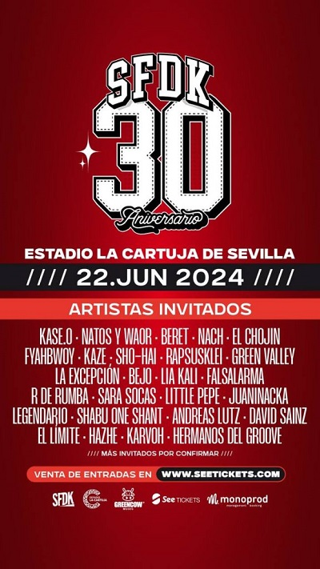

Conciento benéfico de Manuel Molina en Fibes
El Auditorio del Palacio de Congresos y Exposiciones de
Sevilla, Fibes, acogera un concierto benéfico
Cartel del concierto benéfico
Leer más...
XXX Aniversario del grupo de rap SFDK.
SFDK anuncia el listado de invitados
a su concierto en el Estadio de la Cartuja en Sevilla

Cartel concierto 30 Aniversario SFDK
Leer más...
Guns N'Roses y Dragonforce unidos por el cine:
Ambas bandas míticas de la historia del rock ponen la BSO de los vídeos promocionales de la cuarta entrega de Gru, mi villano favorito
 Guns N'Roses y Dragonforce ponen BSO en los vídeos promocionales de
Guns N'Roses y Dragonforce ponen BSO en los vídeos promocionales de Gru,mi villano favorito
Leer más...